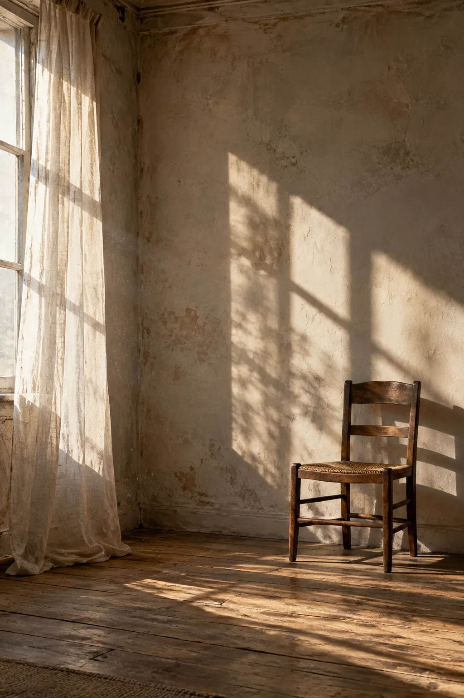

LIGHT STUDY, 2026
02 ABOUT / PRACTICE
让照片先开口。
我相信真正打动人的画面，往往发生在被忽略的间隙里——一束正在消失的光、一个没有完成的动作，或一场雨之后安静下来的街道。
这里是你的完整自述位置。我们可以继续加入个人经历、创作主题、工作方式与展览信息，让读者在看完照片之后，更清楚地认识你。
- 关注
- 人 / 城市 / 自然 / 日常
- 所在地
- Shanghai · China
- 合作
- 肖像 · 品牌 · 编辑项目
- 工作方式
- 观察 · 等待 · 以自然光完成叙事